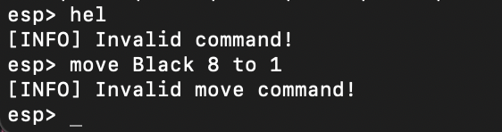
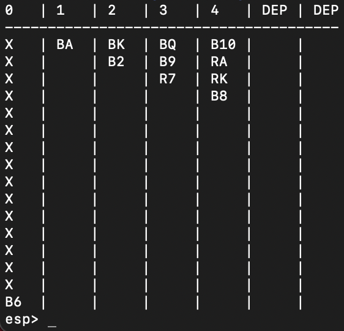

Make a playable Solitair Game, programmed in the language C!
The objective of the game is to release and play into position certain cards to build up each foundation, in sequence and in suit, from the ace through the king. The ultimate objective is to build the whole pack onto the foundations, and if that can be done, the Solitaire game is won.
The game is played with 52 Cards which are initialized trough a config file. The Program then picks the given order and sets up the game field. The Game can now be played!
For displaying the commands: help
For moving a card: move #color #value to #stacknumber
For exit the game: exit
Since this is a console game and no other visualization is implemented, the IDE was
not that important. I chose Visual Studio Code (vsc), since it is my main text editor.
I programmed on MacOS and used the terminal for compiling and executing the program. Since
the reference OS of the University (Technical University of Graz) was Linux, i used an external
linux Server to test the game. I reached it with an ssh connection via the macOS terminal.
The usage of external libraries was prohibited (expect the standard libraries). To make it run,
I used three different libraries:
- stdio.h
- string.h
- stdlib.h
Memory management is very important, when you program in C, so i had to allocate, reallocate and
free the space i needed. For checking if everything worked correct, I used Valgrind at the external
Linux System.
The whole purpose of the program was, to pass a subject for my Degree in Computer Science. the subject was named "Programming 1", where I made other small projects like Hangman or the Caesar Encryption, which are also shown on the website. The main Goal of the Subject was, to teach the fundamentals of the programming language C.
I learned the fundamentals of the programming language C and the importance of efficient memory management. I learned how to use References and Pointers. Structs, enums and several other data structures where implemented to make the game playable.
To make the program work, i used:
- 1552 lines of code
- 34 functions
- 4 enums
- 1 struct
If the user makes a wrong input, the program can react to it like in the followed example
Gamefield
Commands can now be entered. For example we execute the help command which
leads to following screen
For moving a card, we can use the move command. We can move
the Red-7 from stack number 3 to stack number 4. We execute it with move red 7 to 4
Since the Black Ace on stack number 1 can be placed on a new stack, we can move it to
stack number 5 (Dep) with the command move move black A to 5
On the left, we can get a new card, by placing the Black 6 on stack number 0 to the stack 4.
Following command is needed move Black 6 to 4
To exit the game, just type exit and the program stops